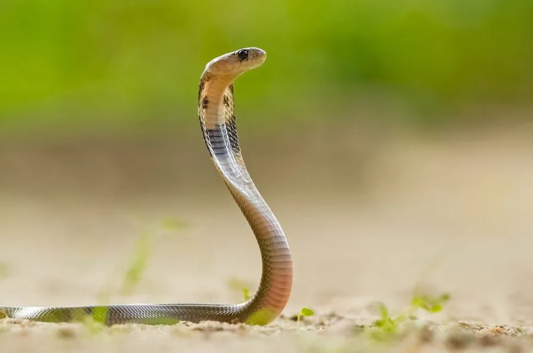

爬行动物 · 动物界
印度眼镜蛇 Naja naja

南亚最具代表性的毒蛇，颈部膨起时背面可见类似眼镜的花纹，在印度文化中具有特殊的宗教地位，也是当地咬伤事件最多的蛇类之一。
- 分类
- 门脊索动物门纲爬行纲目有鳞目科眼镜蛇科属眼镜蛇属
- 栖息环境
- 南亚的农田、灌丛、森林边缘与村落附近
- 地理分布
- 印度、巴基斯坦、斯里兰卡、孟加拉国、尼泊尔等南亚国家
- 保护级别
- IUCN 无危（LC）；CITES 附录 II；非中国原产
物种志
印度眼镜蛇体长 1.2–2 米，头部椭圆，颈褶宽大且能明显膨起，背面颜色从深褐、黑色到淡黄褐色变化很大，颈背常带有一对相连的浅色斑纹，形似一副眼镜；腹面淡黄或灰白，身上有时带有浅色横纹。
它分布于印度、巴基斯坦、斯里兰卡、孟加拉国、尼泊尔等南亚地区，栖息于农田、灌丛、森林边缘和人类聚居区附近，以鼠类、蛙类、鸟类和蛇类为食，多在白天和黄昏活动。每年 4–7 月繁殖，雌蛇产卵 10–30 枚，孵化期约 50–70 天。印度眼镜蛇毒性很强，毒液含神经毒素，被咬后须及时使用抗蛇毒血清；它在印度文化中被视为神圣的动物，每年还有专门的“蛇节”。
形态与习性
- 食性鼠类、蛙类、鸟类和蛇类
- 体长1.2–2 m
- 体重约 0.5–1.5 kg
- 寿命约 20–30 年
- 繁殖卵生，每窝 10–30 枚，孵化 50–70 天
- 活动节律昼行性，黄昏也活动
- 毒性神经毒素为主，被咬须立即就医
趣味知识
- 印度眼镜蛇颈背的浅色斑纹形似一副眼镜，是它最著名的标志。
- 在印度文化中眼镜蛇被视为神圣动物，有专门的蛇节和耍蛇传统。
- 它是南亚地区咬伤人数最多的毒蛇之一，抗蛇毒血清是主要救治手段。